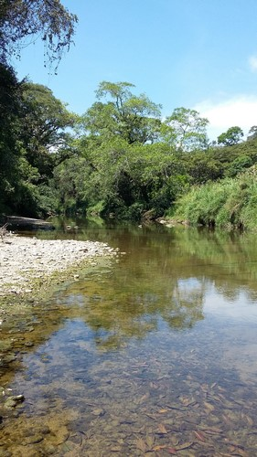
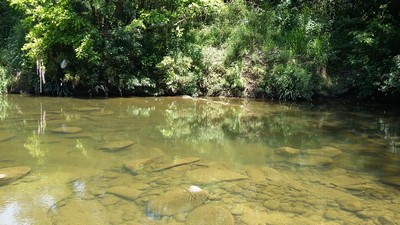
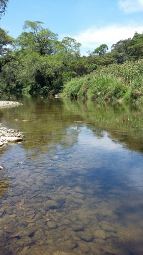
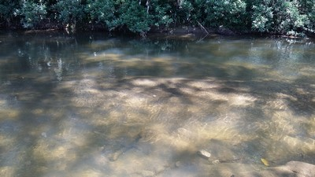
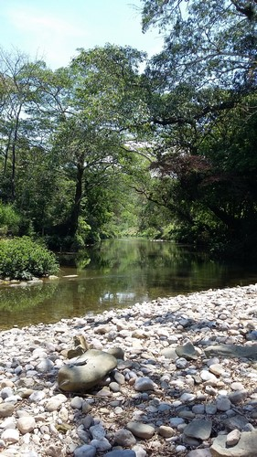

La parroquia es el principal centro de atracción de la ciudad de Yajalón porque las personas devotas se reúnen cada año en la iglesia para venerar a Santiago apóstol de ahí se deriva la gran fiesta y feria realizada cada año..
En donde miles de seguidores se reúnen para pedir por su economía, por felicidad, por las enfermadas y porque quieren tener milagros en su vida
Se localiza en el Municipio de Yajalón.
Puede llegar al Parque Central, y podrá darse cuenta de que al lado de la Presidenccia se encuentra esta Parroquia.
En el lugar usted puede practicar actividades de esparcimientos como:
---Fotografía---





Posicione el mouse sobre las imágenes